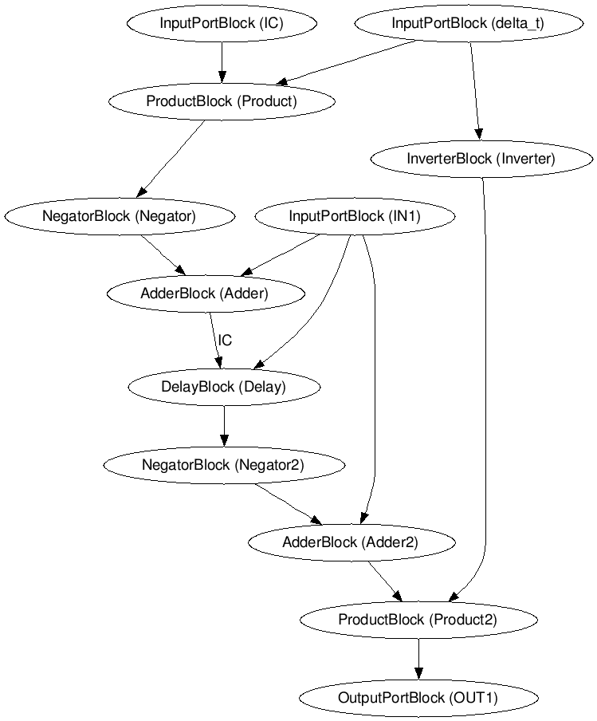
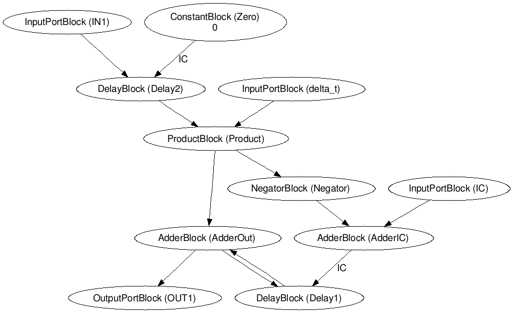
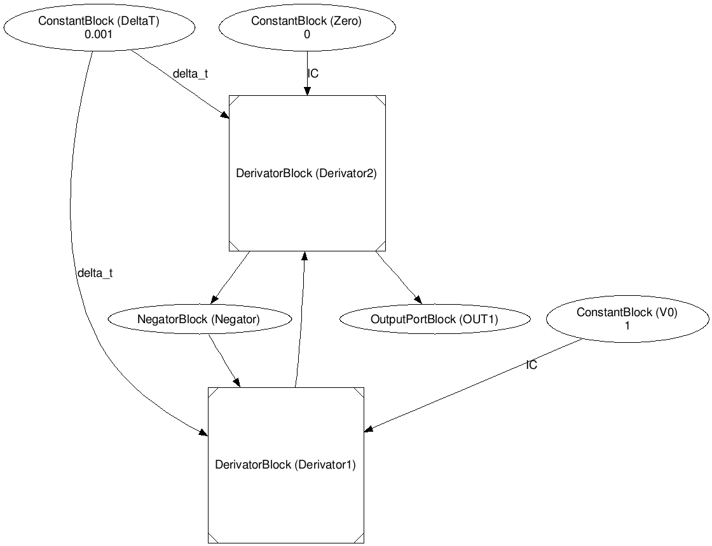
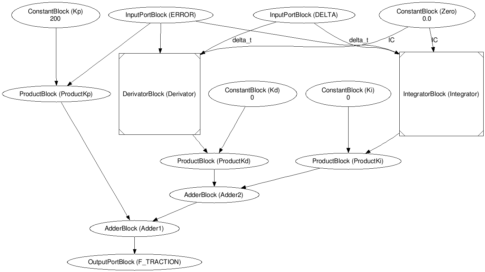

Assignment 3: Continuous Time CBDs
- Rafael De Smet - 20131145
- Benoît-Philippe Fornoville - 20133299
This report shows the results of assignment 3.
Task 1: Harmonic Oscillator
The goal of this task was to implement an harmonic oscillator using integral and derivative blocks. This will lead to an approximation of a sin(t) function. When build and simulated, the error of the oscillator was measured against the sin(t) function.
Integrator And Derivative Blocks
The first step of this task was to create the integrator and derivative blocks in the CBD class. These implementations can be found in CBD.py. Since both the derivator and integral need to know the value of the previous iterations to compute the complete value, the implementations of these blocks both rely on the use of delays. The DerivatorBlock implements the following formula:
x(t) - x(t-Δt)
/
Δt
. When we want to know the value of the derivative at time t, x(t), we express this using the DelayBlock to get the previous value and calculate the new value.
One iteration of the IntegratorBlock is implemented based on the following formula:Δt * in(t - Δt), where in(t) is the current incoming value. To calculate the integral over multiple values, we use the following formula:
IC(0) + (integral of in(τ) dτ from 0 to Δt) + (integral of in(τ) dτ from Δ to 2Δt) + ....
Here IC(0) is the initial condition that the integral has to take at iteration 0, the next iterations are calculated using the formula.
The two new blocks are shown below.
Derivator

Integrator

Oscillator Using Integral Blocks - CBD A
Now we have the integral and derivative blocks, we can start building the oscillator. The oscillator is defined using the following second order differential equation:
d²x
/
dt²
= -x
where x(0) = 0 and
dx
/
dt
(0) = 1.
What we have to do is to translate this differential equation to a CBD model. The way we solve such a differential equation is by using integrals. In this case we are dealing with a second order differential equation, so we must use two integrals. The output of the first integral will serve as the input of the second. This represents the difference between the orders of the equation. The conditions given by the equations serve as the different ICs of the integrals. The first integral will have an IC of 1 since
dx
/
dt
(0) = 1.
The second integral will have an IC of 0 since x(0) = 0. Of course both IntegralBlocks will have a Δt input as well. We will later see that the value of this Δt is important for the overall result.
The right hand side of the differential equation tells us what input the first integral should have. The output of the second integral is x. This means that we need to negate the output of the second integral and use this as input for the first integral. The CBD model of this can be found below.
When we simulate this CBD over time and plot the value of x, we get the results in PlotCBDA.html. Note that in this plot Δt is equal to 0.001. This leads to very satisfactory results.
Oscillator Using Derivative Blocks - CBD B
There are two ways of solving a differential equation. One is as shown in the previous section, by using integrals. The other way is to replace the integrals by derivators. This section shows the results of implementing the oscillator with derivators. The CBD model is very much alike the previous one. The IntegralBlocks have been replaced with DerivatorBlocks. Otherwise nothing changes. This CBD model is shown below.

When we simulate this CBD over time and plot the value of x, we get the results in PlotCBDB.html. Note that in this plot Δt is equal to 0.001. When we compare the two oscillators we can see that they are each others inverse. This could be expected because the derivative and integral are each others inverse.
Measuring Error In CBD A
The next part of this task is to measure the error of the harmonic oscillator in CBD A against the sin(t) function. We know the function to measure the error, it is as follows: e(t) = integral of |sin(t) - x(t)|. x(t) is the current value of the oscillator (CBD A). This means we take the integral of the magnitude of the difference between the ideal value and the approximated value. Note that in this case it is important to choose the right stepsize (Δt). When we use stepsize 0.1 we get the result in PlotErrorA1.html, compared to the result when stepsize is 0.001 in PlotErrorA2.html. It is clear that the smaller stepsize leads to a smaller error. At time 1000, a stepsize of 0.1 leads to an error of 40000 while a stepsize of 0.001 leads to an error of 400. The CBD used to measure the error is shown below. This picture is the setting with a stepsize of 0.1. The SinBlock uses the current time to calculate its output value. The implementation of this new block can be found in CBD.py.
Measuring Error In CBD B
Analogously to CBD A, we measure the error of CBD B against the sin(t) function, using the same two stepsizes. The result of using a stepsize of 0.1 can be found in PlotErrorB1.html and the result of using a stepsize of 0.001 can be found in PlotErrorB2.html. Again, below is the CBD used to measure the error, it is the same as in the previous part, except we know use CBD B instead of CBD A.
Interesting to note is that the resulting errorplots are very alike to the errorplots from CBD A. This is not very suprising because the two CBDs produce very similar results.
Results Task 1
We can conclude that using a smaller stepsize leads to a smaller error. Besides that, there is not a lot of difference between the two implementations, but we know from the theory that using an integral based implementation will eventually smooth the error better than a derivative based implementation.
Task 2: Driver-less Train
The second task was the build a simulation of a cruise control of a train. This system exists of several smaller CBDs. These will be discussed below. The following picture is a full overview of the system and shows the several blocks we needed to implement.

Look-up Block
The first part of this task was to build a block that tell the train which speed to take at which time. The implementation of this block can be found in controller.py in the class ComputerBlock. The table shows the speeds the controller should aim for.
| Time |
Output |
| < 10 |
0 |
| < 160 |
10 |
| < 200 |
4 |
| < 260 |
14 |
| > 260 |
6 |
Build And Simulate
The second and largest task is to build and simulate all the parts of a Driver-less Train. As shown in the assignment, this consists of 5 main elements.
- Time
- Look-up Block
- PID Controller
- Plant
- Cost Function
Time CBD And Look-up Block
The Time CBD and Look-up Block have been discussed previously and in the previous assignment. Below is the full TimeCBD to be complete.

PID Controller
TODO

Plant
TODO
This link will show the full PlantCBD (file is quite large so for convenience open in separate tab) PlantCBD.png.
Cost Function
The Cost Function is a special block that will calculate the cost of the current system, based on the current and ideal velocity of the train at a point t, and the displacement of the passenger at that same time t. In the next section, the use of this block will be clear as we will tune the parameters of the PIDController to find the best set of values that produce the lowest cost.
Tune
TODO